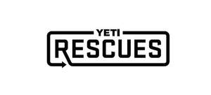

Trade Mark Journal No.2025/035 29 August 2025
UK00004251906 20 August 2025 (18,20,21,24,35,40)

International priority date claimed: 21 April 2025
(United States of America)
(99146325)
- Class 18
- Tote bags; carryalls; weekend bags; day bags, namely, athletic bags; bags, namely, kit bags; backpacks; all-purpose carrying bags; carry-all bags; hiking bags; rucksacks; travel bags; sports bags; daypacks; luggage; soft-sided luggage; duffle bags; submersible bags, namely, submersible luggage, submersible duffle bags, submersible backpacks, submersible hiking bags, submersible rucksacks, submersible grip bags, submersible travel bags, submersible sports bags, submersible all-purpose carrying bags, submersible weekend bags, submersible daypacks, submersible tote bags, and submersible boat bags; waterproof bags, namely, waterproof luggage, waterproof duffle bags, waterproof backpacks, waterproof hiking bags, waterproof rucksacks, waterproof grip bags, waterproof travel bags, waterproof sports bags, waterproof all-purpose carrying bags, waterproof weekend bags, waterproof daypacks, waterproof tote bags, and waterproof boat bags; grip bags; boat bags; all-purpose carrying bags for attaching to portable coolers; fabric pouches sold empty that may be used to hold wallets, keys, bottle openers, fishing tools and accessories, hunting tools and accessories, utensils, and flashlights for attaching to portable coolers; pouches and bags sold empty for attaching to bags, namely, hunting bags, angler's game bags, tote bags, daypacks, all-purpose carrying bags, duffle bags, and travel bags; pouches and bags sold empty for attachment to backpacks; submersible pouches and bags sold empty for attaching to bags, namely, hunting bags, angler's game bags, tote bags, daypacks, all-purpose carrying bags, and travel bags; waterproof pouches and bags sold empty for attaching to bags, namely, hunting bags, angler's game bags, tote bags, daypacks, all-purpose carrying bags, duffle bags, and travel bags.
- Class 20
- Non-metal storage boxes for general use; plastic boxes; non-metal storage boxes for storing gear; chairs; folding chairs; portable chairs; furniture for camping; camping furniture; outdoor furniture; furniture; furniture for outdoors; metal furniture; patio furniture; lawn furniture; seating furniture; furniture parts; lounge chairs; metal chairs; lawn chairs; fishing chairs not affixed to fishing boats; beach chairs; seats; furniture parts, namely, chair legs, arm rests, joints, feet, fabric holders, and chair fabric sold as an integral component of finished furniture.
- Class 21
- Bags specially adapted for holding or carrying water bottles; pouches and bags specially adapted for attachment to non-electric portable coolers; buckets; plastic buckets; industrial buckets; utility buckets; fishing buckets; ranger buckets, namely, buckets for live bait; ice buckets; game buckets for carrying game.
- Class 24
- Blanket throws; pet blankets; travelling blankets; lap blankets; bed blankets; blankets for outdoor use.
- Class 35
- Retail store services featuring bags, pouches, non-metal storage boxes, buckets, chairs, and blankets; online retail store services featuring bags, pouches, non-metal storage boxes, buckets, chairs, and blankets; online retail store services for the purchase of returned and used products, namely, bags, pouches, non-metal storage boxes, buckets, chairs, and blankets; online retail store services featuring used bags, pouches, non-metal storage boxes, buckets, chairs, and blankets; providing a buyback program for returned and used products, namely, bags, pouches, non-metal storage boxes, buckets, chairs, and blankets.
- Class 40
- Conducting a recycling program for bags; conducting a recycling program for pouches; conducting a recycling program for non-metal storage boxes; conducting a recycling program for buckets; conducting a recycling program for chairs; conducting a recycling program for blankets.
YETI Coolers, LLC
Representative: Dehns